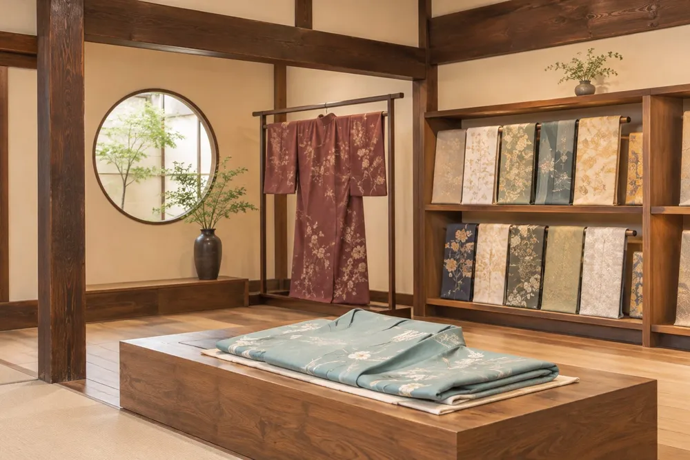
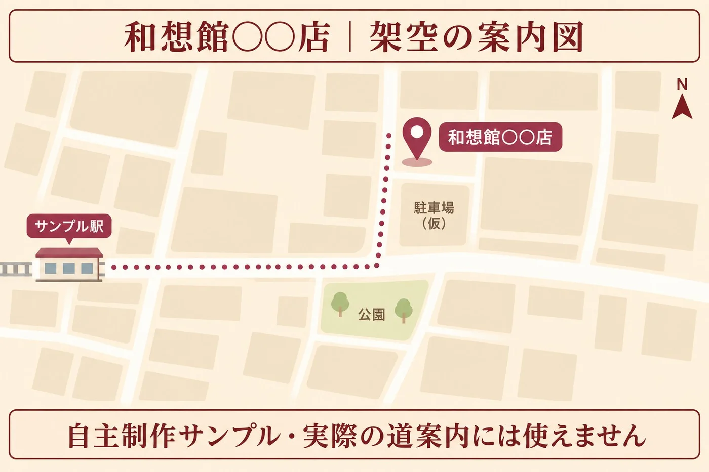
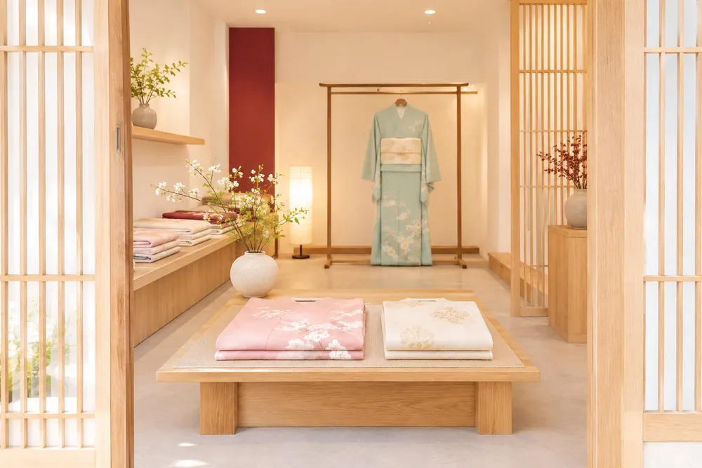
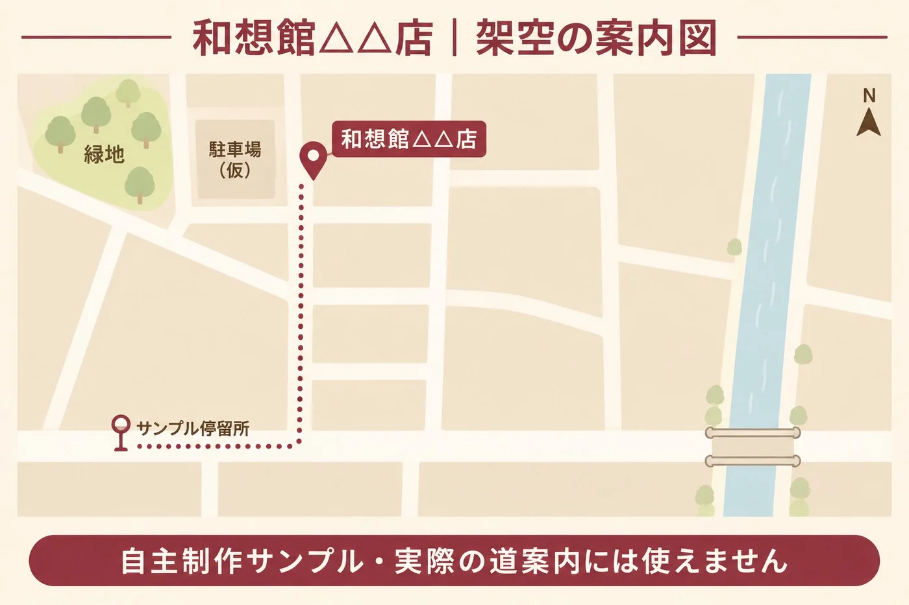

和想館〇〇店（架空）

エリア：〇〇
| 住所 | 〇〇県〇〇市〇〇 |
|---|---|
| アクセス | 最寄り駅・駐車場の案内 |
| 営業時間 | 〇:00〜〇:00 |
| 定休日 | 〇曜日 |
| 電話番号 | 〇〇〇〇-〇〇-〇〇〇〇 |
※店名・所在地・営業時間・電話番号はすべて架空の仮設定です。

和想館△△店（架空）

エリア：△△
| 住所 | 〇〇県〇〇市〇〇 |
|---|---|
| アクセス | 最寄り駅・駐車場の案内 |
| 営業時間 | 〇:00〜〇:00 |
| 定休日 | 〇曜日 |
| 電話番号 | 〇〇〇〇-〇〇-〇〇〇〇 |
※店名・所在地・営業時間・電話番号はすべて架空の仮設定です。

お問い合わせ
実運用では、電話や店頭で受け付ける想定です。この試作では、電話発信・フォーム送信は行いません。